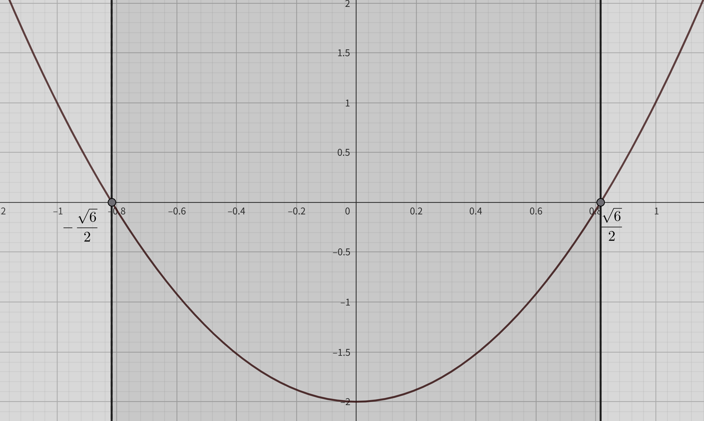
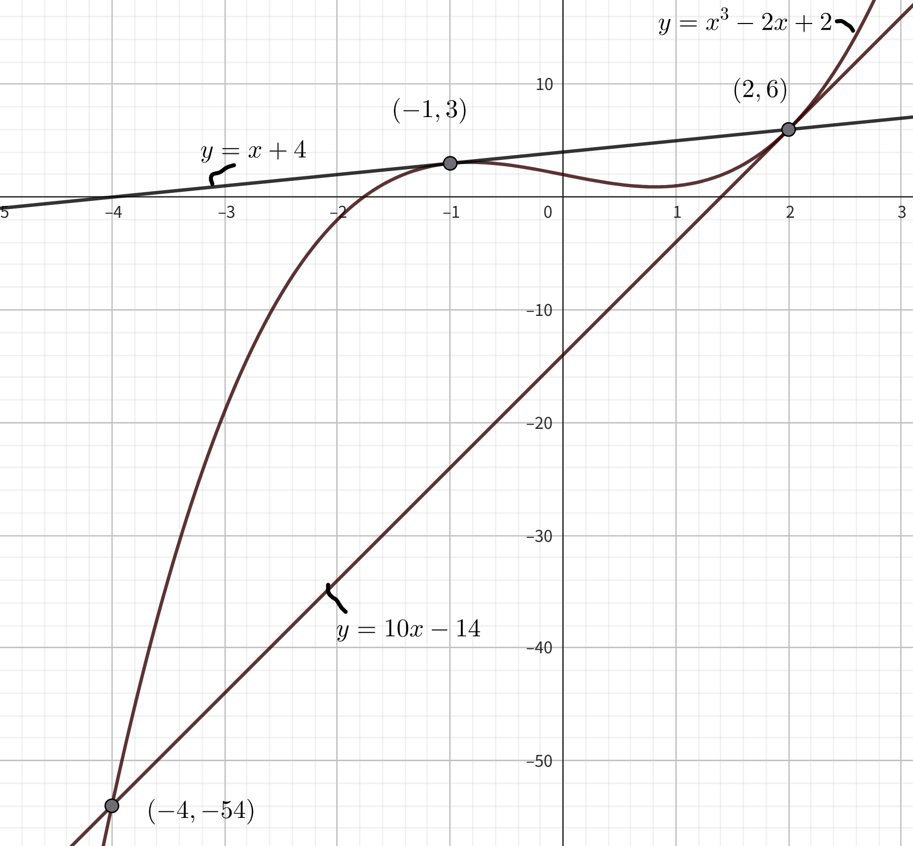
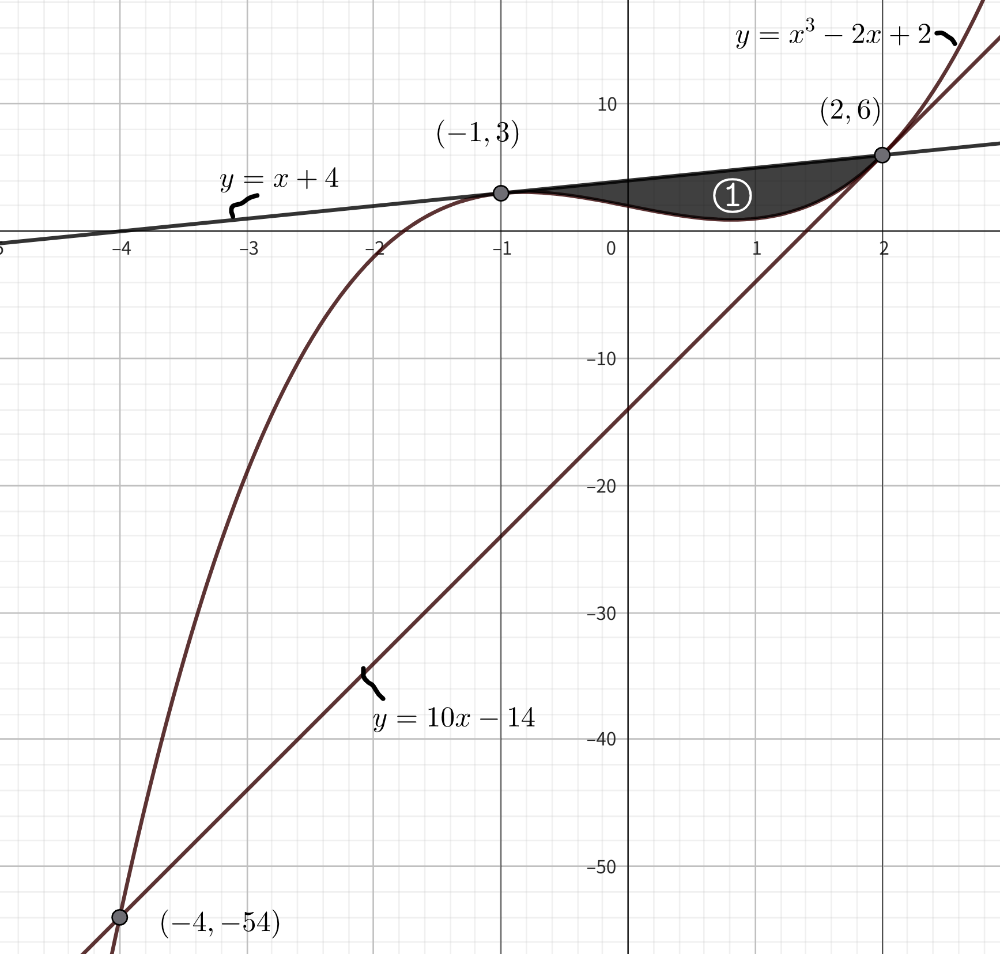
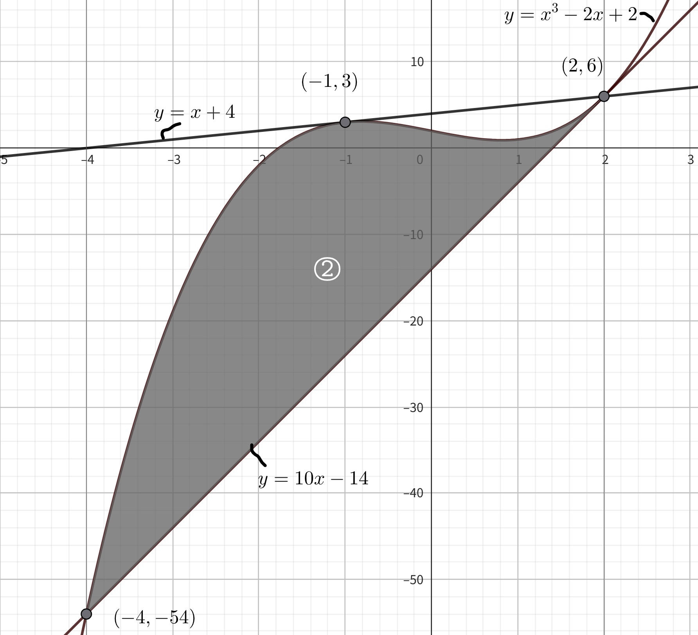

(問題)
関数 \[f(x)=x^{3}-2x+2\] について以下の問いに答えよ
(1)関数 \[y=f(x)\] の接線のうち\((2,6)\)を通るものをすべて求めよ
(2)関数\(y=f(x)\)と接線に囲まれた部分の図形の面積を求めよ
(1)3次関数の接線を求める問題→微分を利用する.
1, 関数\(y=f(x)\)の接点の\(x\)座標を\(t\)とする. 接点の座標が判明しているなら必要なし.
関数\(y=f(x)\)の接点の\(x\)座標を\(t\)とする. 接点の\(y\)座標は
\[f(t)=t^{3}-2t+2\]
となる.
2, \(f(x)\)の導関数\(f'(x)\)を求め, 接線の方程式\(y-f(x)=f'(x)(x-t)\)を求める.
\(f(x)=x^{3}-2x+2\)を微分し接線の傾きを求める.
\[f'(x)=3x^{2}-2\]
より, 接点\((t, t^{3}-2t+2)\)における接線の傾きは
\[f'(t)=3t^{2}-2\]
となる. よって, 接点\((t, t^{3}-2t+2)\)における接線の方程式は
\[y-f(t)=f'(t)(x-t)\]
\[y-(t^{3}-2t+2)=(3t^{2}-2)(x-t)\]
\[y-(t^{3}-2t+2)=(3t^{2}-2)x-(3t^{2}-2)t\]
\[y=(3t^{2}-2)x-3t^{3}+2t+(t^{3}-2t+2)\]
\[y=(3t^{2}-2)x-2t^{3}+2\]
となる.
3, 問題文の条件から\(t\)を求め, 接線の方程式\(y-f(t)=f'(t)(x-t)\)に求めた\(t\)を代入して接線の方程式を求める
今回は接線が\((2, 6)\)を通ることが条件なので
\[y=(3t^{2}-2)x-2t^{3}+2\]
に\((2, 6)\)を代入して\(t\)を求める.
\[6=(3t^{2}-2)×2-2t^{3}+2\]
\[6t^{2}-4-2t^{3}+2-6=0\]
\[-2t^{3}+6t^{2}-8=0\]
\[t^{3}-3t^{2}+4=0\]
この時,
\[t^{3}-3t^{2}+4=0\]
を満たす\(t\)を有利根定理から求める.
よって, 今回の有理数解の候補は定数項\(4\)の約数が\(1, 2, 4, -1, -2, -4\)であり最高次係数\(1\)の約数が\(1, -1\)であるため \[\frac{1}{1}=1, \frac{2}{1}=2, \frac{4}{1}=4, \frac{-1}{1}=-1, \frac{-2}{1}=-2, \frac{-4}{1}=-4,\] の6つとなる. それぞれを\(t^{3}-3t^{2}+4=0\)に代入すると \[(1)^{3}-3×(1)^{2}+4=2\] \[(2)^{3}-3×(2)^{2}+4=0\] \[(4)^{3}-3×(4)^{2}+4=20\] \[(-1)^{3}-3×(-1)^{2}+4=0\] \[(-2)^{3}-3×(-2)^{2}+4=-16\] \[(-4)^{3}-3×(-4)^{2}+4=-108\] となる. よって, \(t^{3}-3t^{2}+4=0\)の有理数解は \[t=-1, t=2\] となる. \(t+1\)で\(t^{3}-3t^{2}+4\)を割ることで\(t^{3}-3t^{2}+4\)の因数分解をする. この時, 組み立て除法を用いる.
組み立て除法を用いて計算すると
| \(1\) | \(-3\) | \(0\) | \(4\) | \(-1\) |
|---|---|---|---|---|
| \(-1\) | \(4\) | \(4\) | ||
| \(1\) | \(-4\) | \(4\) | \(0\) |
(2)関数\(y=f(x)\)と接線に囲まれた部分の図形の面積を求めよ
とりあえずグラフを書いて求める図形の面積を考える. →\(f(x)=x^{3}-2x+2\)のグラフを書く
1, 関数\(f(x)\)を微分し導関数\(f'(x)\)を求める.
また, "グラフの凹凸を求めよ"問題文にあれば二階微分\(f''(x)\)も求める.
関数
\[f(x)=x^{3}-2x+2\]
の導関数は(1)より
\[f'(x)=3x^{2}-2\]
である.
2, 導関数\(f'(x)=0\)となる\(x\), 二階微分\(f''(x)=0\)を求め導関数を書く
\(f'(x)=0\)となる\(x\)を求める.
\[f'(x)=3x^{2}-2=0\]
\[(\sqrt{3}x+\sqrt{2})(\sqrt{3}x-\sqrt{2})=0\]
\[x=\frac{\sqrt{2}}{\sqrt{3}}, -\frac{\sqrt{2}}{\sqrt{3}}\]
\[x=\frac{\sqrt{6}}{3}, -\frac{\sqrt{6}}{3}\]
増減表を書く
| \(x\) | ・・・ | \(-\frac{\sqrt{6}}{3}\) | ・・・ | \(\frac{\sqrt{6}}{3}\) | ・・・ |
|---|---|---|---|---|---|
| \(f'(x)\) | \(+\) | \(0\) | \(-\) | \(0\) | \(+\) |
| \(f(x)\) | \(\nearrow\) | \(\frac{18+4\sqrt{6}}{9}\) | \(\searrow\) | \(\frac{18-4\sqrt{6}}{9}\) | \(\nearrow\) |
この時,
\[f(-\frac{\sqrt{6}}{3})=(-\frac{\sqrt{6}}{3})^{3}-2×(-\frac{\sqrt{6}}{3})+2\]
\[f(-\frac{\sqrt{6}}{3})=-\frac{2\sqrt{6}}{9}+\frac{2\sqrt{6}}{3}+2\]
\[f(-\frac{\sqrt{6}}{3})=\frac{18+4\sqrt{6}}{9}\]
\[f(\frac{\sqrt{6}}{3})=(\frac{\sqrt{6}}{3})^{3}-2×(\frac{\sqrt{6}}{3})+2\]
\[f(-\frac{\sqrt{6}}{3})=\frac{2\sqrt{6}}{9}-
\frac{2\sqrt{6}}{3}+2\]
\[f(-\frac{\sqrt{6}}{3})=\frac{18-4\sqrt{6}}{9}\]
と計算した.
また, \(f’(x)\)の正負は, \(f’(x)\)のグラフから判断した.
\(f’(x)=3x^{2}-2\)のグラフ

3, 増減表に従って関数を書く
よって, グラフは

となる. 関数\(y=x^{3}-2x+2\)と\(y=x+4\)の接点の\(y\)座標は, 接点の\(x\)座標が\(x=-1\)なので\(y=x+4\)に\(x=-1\)を代入した
\[y=-1+4=3\]
となる. よって, 関数\(y=x^{3}-2x+2\)と\(y=x+4\)の接点の座標は(-1, 3)となる. また,
関数\(y=x^{3}-2x+2\)と\(y=x+4\)の接点\((-1, 3)\)以外の交点を求めるためには
\(y=x^{3}-2x+2\)と\(y=x+4\)の連立方程式を解けばよい.
\begin{equation}
\left\{\,
\begin{aligned}
& y=x^{3}-2x+2 \\
& y=x+4 \\
\end{aligned}
\right.
\end{equation}
\[x+4=x^{3}-2x+2\]
\[x^{3}-3x-2=0\]
この時, 関数\(y=x^{3}-2x+2\)と\(y=x+4\)の接点の\(x\)座標は\(x=-1\)であるので,
\(x^{3}-3x-2=0\)は, 必ず\(x=-1\)を解に持つ. \(x^{3}-3x-2\)を\(x+1\)で割ることで因数分解をする.(組み立て除法等を用いる)
今回の問題では, 以下の3つの関数で囲まれた図形の面積を求める必要がある.
定積分
\[S=\int_{a}^{b}\{f(x)-g(x)\}\]
はある範囲\(a~b\)において2つの面積で囲まれた図形の面積を求める計算なので, 1度の計算で
3つの関数に囲まれた面積を求めるのは難しい.
→求める面積を分けて考える必要がある.
交点での境界を利用して図形を以下のように分割する.
区間①：関数\(y=x^{3}-2x+2\)と接線\(y=x+4\)で囲まれた部分
区間②：関数\(y=x^{3}-2x+2\)と接線\(y=10x-14\)で囲まれた部分
この分割により, それぞれが"ある範囲における2つの関数で囲まれた面積"となり, 定積分で計算可能になる.
①の面積を求める

①は, 交点\(x=-1\)と\(x=2\)である関数\(y=x^{3}-2x+2\)と関数\(y=x+4\)で囲まれた面積なので①の面積\(S_①\)は
\[S_①=\int_{-1}^{2} (x+4)-(x^{3}-2x+2)dx\]
\[S_①=\int_{-1}^{2} -(x^{3}-3x-2)dx\]
となる. 計算すると
\[S_①=\int_{-1}^{2} -(x^{3}-3x-2)dx\]
\[S_①=-\bigg[\frac{1}{4}x^{4}-\frac{3}{2}x^{2}-2x\bigg]^2_{-1}\]
\[S_①=-\bigg[\frac{1}{4}\{2^{4}-(-1)^{4}\}-\frac{3}{2}\{2^{2}-(-1)^{2}\}-2\{2-(-1)\}\bigg]\]
\[S_①=\frac{27}{4}\]
となる.
②の面積を求める

②は, 交点\(x=-4\)と\(x=2\)である関数\(y=x^{3}-2x+2\)と関数\(y=10x-14\)で囲まれた面積なので②の面積\(S_②\)は
\[S_②=\int_{-4}^{2} (x^{3}-2x+2)-(10x-14)dx\]
\[S_②=\int_{-4}^{2} (x^{3}-12x+16)dx\]
となる. 計算すると
\[S_②=\int_{-4}^{2} (x^{3}-12x+16)dx\]
\[S_②=\bigg[\frac{1}{4}x^{4}-\frac{12}{2}x^{2}+16x\bigg]^2_{-4}\]
\[S_②=\bigg[\frac{1}{4}×\{2^{4}-(-4)^{4}\}+6×\{2^{2}-(-4)^{2}\}+16×\{2-(-4)\}\bigg]\]
\[S_②=108\]
となる. よって, 今回求める面積\(S\)は
\[S=\frac{27}{4}+108=\frac{27}{4}+\frac{432}{4}=\frac{459}{4}\]
となる.
(参考) \(\frac{1}{12}\)公式
3次関数
\[y=ax^{3}+bx^{2}+cx+d\]
とその接線
\[y=ex+d\]
の交点が\(x=α\), \(x=β\)である時, 三次関数\(y=ax^{3}+bx^{2}+cx+d\)と接線\(y=ex+f\)で囲まれる面積\(S\)は
\[S=\frac{|a|}{12}(β-α)^{4}\]
となる.
これを用いて, ①の面積を求める.
①の面積は関数\(y=x^{3}-12x+16\)と関数\(y=x+4\)が交点\(x=-1\)と\(x=2\)で囲んだ面積なので\(\frac{1}{12}\)公式より
\[S_①=\frac{|-1|}{12}\{2-(-1)\}^{4}\]
\[S_①=\frac{1}{12}(3)^{4}\]
\[S_①=\frac{1}{12}×81\]
\[S_①=\frac{27}{4}\]
となる.
ベータ関数を用いた面積①の計算
①は, 交点が\(x=-1\), \(x=2\)である関数\(y=x^{3}-12x+16\)と関数\(y=x+4\)で囲まれた面積なので
\[S_①=\int_{-1}^{2} (x+4)-(x^{3}-2x+2)dx\]
\[S_①=\int_{-1}^{2} -(x^{3}-3x-2)dx\]
となる. \(y=x+4\)と\(y=x^{3}-2x+2\)は\(x=-1\)と\(x=2\)で交点を持つ.
また, \(y=x+4\)は\(y=x^{3}-2x+4\)の\(x=1\)における交点である. よって,
\(x^3-12x+16\)は\(x=-1\)と\(x=2\)を解にもち, \(x=-1\)は重解になる. よって,
\[S_①=\int_{-1}^{2} -(x^{3}-3x-2)dx=-\int_{-1}^{2} (x+1)^{2}(x-2)dx\]
と式変形できる. よって, \(a=-1\), \(α=-1\), \(β=2\), \(m=2\), \(n=1\)とすると①の面積は
\[S_m, n=a(β-α)^{m+n+1}\int_0^1 t^{m}(t-1)^{n}dt\]
より
\[S_①=(-1)\{(2)-(-1)\}^{2+1+1}\int_0^1 t^{2}(t-1)^{1}dt\]
\[S_①=-(3)^{4}\int_0^1 t^{3}-t^{2}dt\]
\[S_①=-81\bigg[\frac{1}{4}t^{4}-\frac{1}{3}t^{3}\bigg]_0^1\]
\[S_①=-81(\frac{1}{4}-\frac{1}{3})\]
\[S_①=-81(-\frac{1}{12})\]
\[S_①=\frac{27}{4}\]
となる.